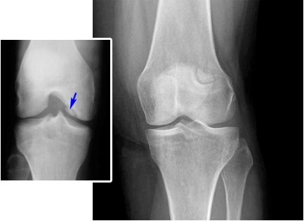
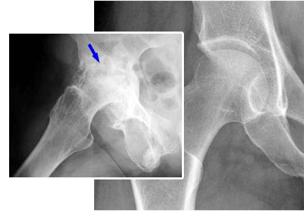
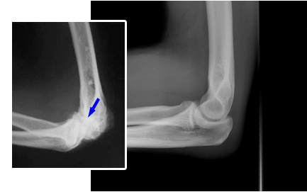

Професор Стойнов: "Защо се харчат цели години за лечение на ставите, след като това може да се направи за 3 седмици!"
За приноса на професор Стойнов в областта на лечението на ставните заболявания, и за това, как можете да получите уникален препарат за тяхното възстановяване – прочетете в тази статия
През 2018 г., изследователска група, ръководена от професор Стойнов, проведе серия от лабораторни тестове на ново, иновативно лекарство за лечение на заболявания на опорно-двигателната система. Резултатите надминаха всички очаквания. Сравнителният анализ на новото лекарство и известни аналози от фармакологичния пазар, не остави никакво съмнение, че пред учените се отворя нова ера в ревматологията ! Учените са подали документи за регистрация на лекарството, и вече искаха да стартират масовото му производство, но се случи нещастие – професор Стойнов почина. Какво ще се случи по-нататък, дали новото лекарство ще види свят? Нашите журналисти зададоха този въпрос на главния ревматолог на Министерството на здравеопазването – Симеон Стойнов, който също даде своя значителен принос в изследванията на лекарството.
Главният ревматолог д-р Симеон Стойнов, коментира ситуацията. "Много ни е трудно да се примирим с факта, че професора вече не е сред нас. Що се отнася до лекарство - ние не можехме да допуснем, че проектът на живота му ще се изгуби някъде сред архивните документи. Затова беше взето решение - работата да се доведе до край.
Д-р Симеон Стойнов Здравейте, Димитър! Щастлив съм да съобщя, че след като преминахме всички необходими тестове, ние получихме разрешение за производство. Препаратът е наречен "Artrovex", съставът му се базира на компоненти, получени от рогата на алтайски елен марал. Клиничните тестове доказаха високата ефективност на "Artrovex" в лечението на ставите: лекарството може да удължи живота на хората, с ревматологическими заболявания, минимум с 10 години!
Репортер: "Д-р Стойнов, можете ли да ни разкажете, с какво Artrovex се различава от фармацевтичните препарати, които вече са познати на хората?"
Д-р Симеон Стойнов: Днес, ако на пациента му е поставена диагноза свързана със заболявания на ставите, лекарите му предписват едно от следните лекарства:
|
|
|
Действието на повечето от тях е насочено на временно отстраняване на болката. Следователно, те не лекуват ставите, а само маскират симптомите, без да влияят по някакъв начин на лечението на самото заболяване. В допълнение към гореизложеното, струва си да се отбележи, че продължителната употреба на този вид лекарства "засяга" бъбреците, черния дроб и стомаха. Пациентът попада в един порочен кръг: той е принуден да взима лекарство всеки път, когато симптомите се връщат отново, като при това болестта не се лекува, а дори се унищожават и храносмилателните органи. Човек трябва да разбере, че ставните заболявания са изключително опасни, те могат да причинят дори рак.
Нека видим какви усложнения могат да предизвикат ставни заболявания. Ако приемем най-разпространените заболявания на ставите, те са:
| Заболяване | Усложнения на ранен етап | Усложнения на късен етап |
|---|---|---|
| Артрит | Некроза на хрущялната тъкан, разрушаване на ставата, синовит | Окончателно разрушаване на ставата, сепсис, раков тумор |
| Артроза | Възпаление, промяна на структурата и деформация на ставата, риск от заразяване на кръвта | Инвалидност (парализа на крайниците) разрушаване на хрущялната тъкан, раков тумор |
| Остеохондроза | Деформация и изместване на гръбначните дискове, прищипване на нервите | Дискова херния, нарушение на работата на централната нервна система (ЦНС), има риск от появата на ракови тумори |
| Коксартроза | Нарушено кръвоснабдяване, деформация на хрущяла и ставите, възпаление на синовиалната торбичка | Ограничена подвижност на ставите (инвалидност 1 или 2 група) раков тумор |
| Остеопороза | Деформация, костна некроза (костите стават чупливи) | Разрушаване на костите по целия скелет, парализа на крайниците, има риск от появата на ракови тумори |
| Бурсит | Възпаление на синовиалната торбичка на ставата, натрупване на гной | Сепсис, ограничена подвижност, разпадане на мускулната тъкан, злокачествени тумори |
| Подагра | Възпаление на ставата на стъпалото, солеви отлагания, концентрация в костите на уратни кристали | Поява и растеж на нарастък на крака, ставата се увеличава, некроза на костите на стъпалото, поява на тумори |
Както виждате, заболяванията на ставите, често водят до сериозни усложнения, които водят до инвалидност на пациента, или дори до смърт. През последните 100 години, натоварването върху човешкия скелет значително се е увеличило. В резултат на това, сега почти всеки 25-годишен човек вече има по 1-2 увредени стави. Към 35-40 годишна възраст, ако не се лекува, има голяма вероятност, че той ще има усложнения.
Сега предлагам да прехвърлим разговора в по-положителна посока. Професор Стойнов в продължение на десетилетия изучава нетрадиционните методи за лечение и особено голям интерес проявява към сибирските тайни за здраве и дълголетие. Всички знания, които е натрупал, както и опитът на нашия научноизследователски институт, се въплътиха в препарат, който вече споменах - Artrovex!
Натуралните компоненти в състава на препарата могат да повлияят на ключовия фактор на лечението на болестта – възстановяването на кръвоснабдяването на засегнатата става. Дори само това вече е достатъчно, за да се спре некрозата, да се премахне възпалението и по-нататък, да се възстановят тъканите. Но това е лесно само на думи: на практика, нито едно от съществуващите лекарства не може да възстанови кръвообращението. Добре, че сега вече има такова лекарство, и нещо повече, сега то се продава почти безплатно, като част от една държавна програма.
Преди да бъде включен в програмата, лекарството е минало обширни клинични изследвания. Общо, в тестовете са участвали 10 120 доброволци от различни възрастови групи с различни заболявания на опорно-двигателната система. От тях, 93,8% са се възстановили напълно. При 5,6% частично са останали проблеми, но като цяло тяхното състояние значително се е подобрило. Тези, които са имали тежка форма на артрит, след приключване на курса напълно са възстановили подвижността си, но слаби, периодични болки, все пак се появяват от време на време. При останалите 0,6% е отбелязано силно подобряване на състоянието, но това не е достатъчно, за да се смятат за здрави.
Репортер: «Извинете, правилно ли чух? Наистина ли продавате това чудодейно лекарство, почти безплатно?»
Д-р Симеон Стойнов: Да, всичко е вярно. Ние организирахме фондация в памет на професор Стойнов, получихме държавно финансиране и стартирахме програма за рехабилитация. За всичко това бяха отпуснати 361 млн. евро от държавата, и 27 милиона дадоха търговски фондове на Научно-изследователския институт по ревматология. Най-важното е, че лекарството наистина работи. Лично аз контролирах клиничните тестове и мога да потвърдя неговата ефективност.
VИскам да Ви запозная с резултатите от клинични проучвания на Artrovex.Те изненадаха много лекари. Истинско спасение за хората, чиито стави се нуждаят от лечение.
Снимки на ставите "преди" и "след" употребата на «Artrovex»
| Жена. 54 години. Ставата е напълно възстановена. Продължителност на лечението: 1,5 месеца: |  |
| Лечение на тазобедрената става на един мъж. 44 години. Ужасните болки, които съпровождаха пациента цели 2 години, изчезнаха напълно: |  |
| Лечение на лакътната става. Жена. на 31 години. Продължителност на лечението: 2 месеца. Ставата е напълно възстановена: |  |
Репортер: «Впечатлява! Моля, кажете ни, какво означава всичко това за хората, които вече са се примирили със своята болест?»
Д-р Симеон Стойнов: Това означава, че е време да спрат да се примиряват с болестта си! Пред нас е истински медицински пробив, който позволява ставите да бъдат лекуват, дори без да излизате от дома си, само за един или два месеца. Artrovex не охлажда кожата и действието му не е насочено към облекчаване на болката – той наистина "рестартира" организма на клетъчно ниво, като по този начин премахва причината за болестта, а не симптома. Прешлените, хрущялите, сухожилията и ставите се връщат в първоначалното си състояние, благодарение на възстановеното кръвоснабдяване, влошено от травма или от възрастта.
Още през първия ден Artrovex стартира системата за регенерация на организма. Почти веднага ще почувствате облекчение, а до две-три седмици лечението ще прикдючи.
Репортер: «Artrovex» само при точно конкретни заболявания ли помага ?»
Д-р Симеон Стойнов: Не, той възстановява кръвообращението, като действа на клетъчно ниво, а това означава, че той може да излекува пациента от всички заболявания на опорно-двигателната система: артрит и артроз, остеопороза, ревматизъм, подагра, ишиас и остеохондроза, изместване на прешлените. На всеки един стадий.
Репортер: «Наистина ли, мазилото може да лекува всички тези заболявания, а не само да облекчава болката?»
Д-р Симеон Стойнов: Мазилото и болката облекчава, и напълно лекува заболяването. Разбира се, в медицината има и други решения, но те обикновено са свързани с опасна хирургическа намеса. И струват изключително скъпо, така че са достъпни само за малко хора.
Кореспондент: "Чух ли добре? Наистина ли разпространявате чудото? Може ли някой да го направи?"
Д-р Симеон Стойнов: Има само едно "но" - поради малките производствени обеми, държавната програма действа избирателно. За това тези, които се нуждаят от лекарството, могат да оставят заявка и да получат Artrovex с отстъпка. Всичко, което е необходимо, е да оставите вашето име и телефонен номер, по който служител от кол центъра може да се свърже с Вас за повече подробности.
Репортер: «Колко време ще продължава програмата?»
Д-р Симеон Стойнов: програмата действа до - 8.07 Това е последният ден, когато можете да оставите заявка за "Artrovex". Ако все още не сте направили това, съветвам Ви да побързате, защото след това няма да можете да получите лекарството с 50% намаление. Аз лично Ви гарантирам, че всички заявки ще бъдат разгледани и всеки, който има нужда, ще получи лекарството.
Репортер: "Д-р Стойнов, благодаря Ви за това интервю! Искате ли да кажете още нещо на нашите читатели, преди да се сбогуваме с Вас?"
Д-р Симеон Стойнов: Да, благодаря. Искам да обърна вниманието на читателите на това, че заболяванията на ставите стават все "по-млади". Дори и редките, слаби болки могат да сигнализират за съществуването на проблем, който веднага трябва да бъде решен, но не всеки лекар може да Ви помогне по подходящия начин. Както се казва, спасяването на удавника е в неговите ръце.
И не забравяйте: заболяванията на опорно-двигателната система, това е не само дискомфорт. Те могат лесно да съкратят продължителността на живота с 15-20 години.